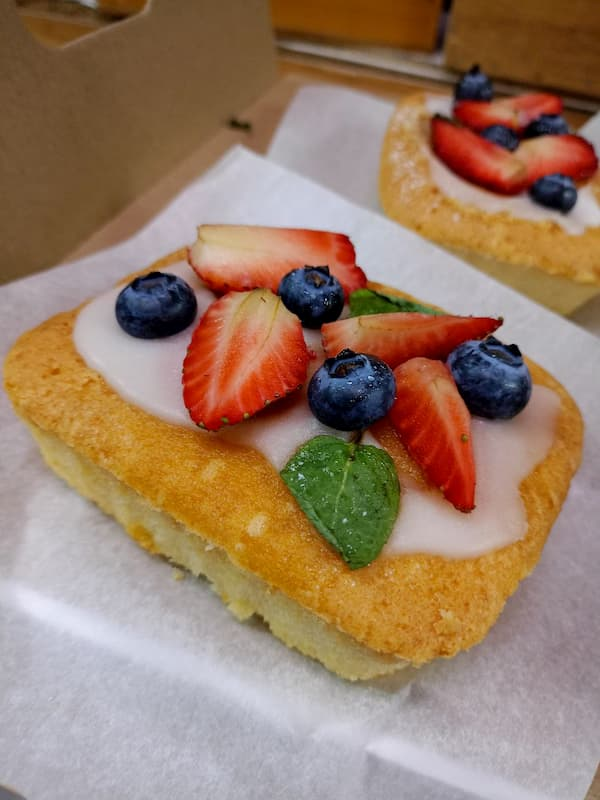

В преддверии тёплого весеннего праздника команда типографии «Лазурь» задумалась о том, как сделать этот день особенным для наших дорогих сотрудниц. Нам хотелось не просто выполнить традиционный ритуал поздравления, а подарить искреннюю радость, которая запомнится и согреет своим вниманием.

Мы остановились на беспроигрышном варианте — изысканном сладком подарке. Главным «героем» праздника стали пирожные с нежнейшим кремом и сочными ягодами. Сладкий десерт всегда символизирует заботу, уют и тепло, а в сочетании с продуманной подачей он превращается в настоящее произведение искусства и маленькое событие.
Секрет успеха — в любви к деталям. Мы постарались, чтобы наше поздравление задействовало сразу несколько каналов восприятия: было вкусным, красивым и душевным.
Когда сотрудницы получили свои подарки, офис наполнился особой атмосферой. Искренние улыбки, возгласы удивления от дизайна упаковки и аппетитный аромат пирожных сделали этот день по-настоящему тёплым. Было приятно слышать, что многие отметили не только безупречный вкус десерта, но и то, как продуманно и стильно он подан. В такие моменты понимаешь: мелочей не существует.
Этот небольшой, но наполненный смыслом жест стал ещё одним подтверждением простой истины: в типографии «Лазурь» работают не просто коллеги, а большая команда единомышленников, где ценят и уважают каждого. Мы уверены, что именно такие моменты — с улыбками, сладостями и красивыми коробочками — делают нас сплочённее и дарят ощущение поддержки.
Спасибо нашим замечательным сотрудницам за их ежедневный труд, профессионализм и ту теплоту, которую они дарят коллективу. Пусть впереди будет много ярких событий, новых побед и, конечно, сладких поводов для радости! 😊
С уважением и самыми тёплыми пожеланиями, команда типографии «Лазурь»